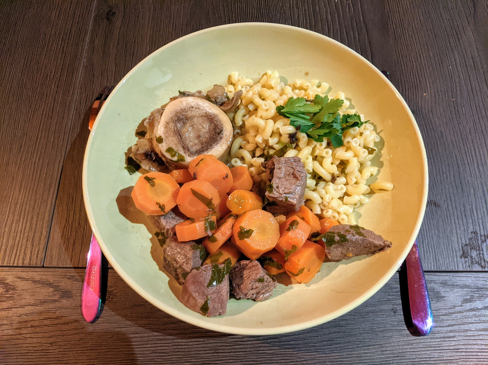

Bœuf mode

Pour 4 personnes :
- 600g de bœuf à braiser
- Os, os à moëlle (le plus possible selon la générosité du boucher)
- Un kilo de carottes
- Persil (frais de préférence)
- Laurier
- Un oignon piqué d'un clou de girofle
- Huile
- Margarine
- Vin blanc sec (de table)
- Sel, poivre
- Faire chauffer l'huile avec la margarine dans une cocotte à feu fort.
- Faire revenir le bœuf de tous les côtés dans la graisse chaude (le temps que ça change de couleur).
- Verser du vin blanc dans la casserole (aux 3/4) avec un peu d'eau.
- Rajouter sel, poivre, un oignon piqué d'un clou de girofle, du persil et une feuille de laurier.
- Mettre les os dans la casserole, faire mijoter une heure (à feu doux à partir des premiers bouillons).
- Enlever les os et l'oignon, ajouter les carottes coupées en rondelles, saler, remettre au-dessus os et oignon. Laisser cuire deux heures (d'abord à feu vif, puis à feu doux après les premiers bouillons).
Remarque : on peut utiliser d'autres graisses que de l'huile et de la margarine, par exemple du saindoux ou du beurre. L'important est d'avoir deux graisses différentes.
Retour à la liste des recettes